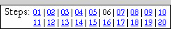
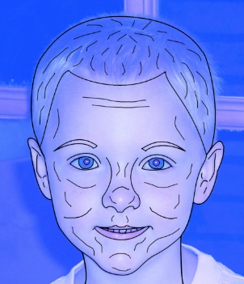
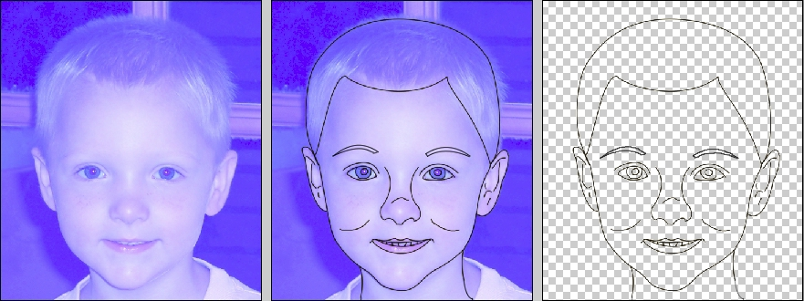

| PART I: YOUR FACE | |
| Step 06: Freehand Inking |  |
This step will finish off our line work by filling in the smaller lines. Let's get started by making sure we have the right brush settings.
We finally get to use our Freehand layer. Note that because our Freehand layer is sitting on top of our layer stack that whatever we draw on it will appear to hover over everything on the lower layers.
Now we can begin drawing. Unlike a paint brush in real life, here you have the option to undo (by using Ctrl+Z) and remove the lines you draw. It might be helpful for you to keep one hand over the undo keys when drawing. If you're new to drawing with Photopea, keep in mind that using a mouse to draw won't come naturally the first time you try it. Like any tool, it may take some practice to get used to it.
Let's add the smaller lines to your face one piece at a time. Don't draw slowly or try to follow every single line exactly (your face will look very squiggly as though you were trying to draw it while riding a bike down a hill covered with rocks). Instead use short, quick strokes. How many lines you add is up to you, but don't over do it as the lines will begin to merge together. We want a general outline of your face, not a line for every single tiny thing.
As you work, be sure that you are drawing only on the Freehand layer. You should zoom in pretty far to ensure that your work follows the lines of your picture.
For my eyes, I put lines around the iris (the colored part of the eye) and the pupil (the dark center of the eye) as well as small lines between his eyeballs and his eyebrow to represent the crease he has there. What lines you add are up to you, just be sure not to go overboard.
Be careful not to go crazy with your lines. If you add in too many it will look ridiculous. Take a look at the image below...

See...ridiculous...
You want just enough lines to give your face some nice contour so that you have a nice, complete face at this point.
|
Keep something very important in mind: YOU MUST FREEHAND INK some part of your face. Do not simply skip this step thinking that the lines you already have look fine. Remember that the entire point of this project is to learn how Photopea works and get experience using its various tools. If you skip this step, not only will you get no practice using the Brush Tool, but since I can't give you credit for work you did not do, you lose points for this portion of the project. |
When complete, you should have something similar to the image below...

Of course, your image will be different, but it should be as simple as the image above. If you have too many lines, the image will be overly complicated. What we want is a clean, simple image.
We need to take some time now to make sure that our lines all match and that there are no gaps, which will cause problems when we try to add color in the next step.
Don't be too worried if your outline is not perfect. You will eventually (in Step 19) reduce your face to a much smaller size so you will not notice most imperfections. For example, you may notice that both of my corrections above are not absolutely perfect lines, they each have a slight bend to them. Notice also that I'm not freaking out about it because once my face is shrunk down those small deviations will not be noticeable. Remember that you are creating a cartoon version of yourself and thus it will not be a perfect duplicate of your actual face. This is good and what we want.
At this point your inking should be done. Don't worry if your outline does not look as good as mine - it shouldn't if this is your first time working with Photopea. That's OK - the more you work with the program the better your work will become. The only way to improve is to practice.
01 | 02 | 03 | 04 | 05 | 06 | 07 | 08 | 09 | 10 | 11 | 12 | 13 | 14 | 15 | 16 | 17 | 18 | 19 | 20